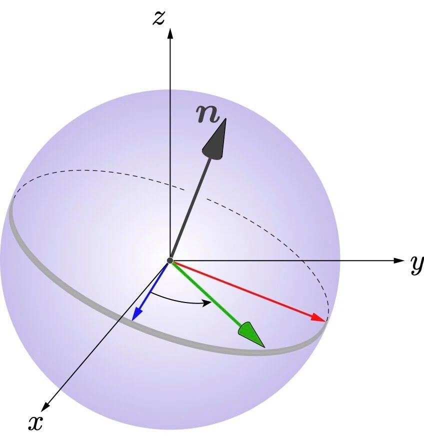

ゼロからのROS入門
位置制御とモーションプランニング
大阪大学 中島優作
ロボット制御参考資料
このスライドは数式を省いて実際のロボットでの説明を重視しています。数式がしっかり載っている教科書との併用すると理解が深まるのでおススメします。

イラストが豊富で分かりやすいながらも基礎的な数式を扱っていて最初に読むのにちょうど良い
最も基本の位置制御まで扱っている

教科書「ロボット制御基礎論」を現在版にブラッシュアップ、理論的な詳しさと実装面までの手引きが充実している
アームの軌道制御とは、位置制御との違い
位置制御（メーカー制御）
- 基本的にwaypointsごとに動きを止める
- 連続的に動こうとするとガタガタした動きになる
軌道制御
動きを止めないので、非常に滑らかな動きができる
粉体粉砕などの連続的なタスクに有効
ROSにおけるアーム制御の前提知識(読み飛ばしてもok)
ロボットアームの構造

FAプロダクツより引用(https://jss1.jp/column/column_162/)
- ジョイント(関節) - モーターが入っていて動く
- リンク - ジョイントを繋ぐ
剛性が高い方がロボット動作の精度が良くなる - エンドエフェクタ(手先効果器) - 作業をする手先
作業に応じて付け替える2本指や5本指のハンド吸盤
アーム制御は組合せ
| ロボットが可能な制御 | 指定したい座標系 | やりたい制御 |
|---|---|---|
| 位置 | 関節座標系 (ジョイント座標系) |
位置 |
| 速度 | 直交座標系 (デカルト座標系) |
速度 |
| トルク | 力(トルク) |
例) 位置制御ロボットで直交座標系(XYZ空間)に対して位置制御したい
→ XYZで座標を指定してロボットアームをうごかせる
多くのロボットは位置/速度制御

位置/速度制御対応ロボット
- Universal Robot
- DENSO
- Dobot
- その他多数のロボット
トルク制御対応ロボット
- Franka Robotics
- KUKA
よく使うROSのアームコントローラ
関節座標系に対して位置制御したい
JointTrajectoryController
ROS標準のアームコントローラ
位置 or 速度 or トルク制御ロボットに対応
直交座標系に対して位置/力制御したい
CartesianControllers
位置 or 速度制御ロボットの手先に力覚センサを取り付けて位置/力制御を実現するROSパッケージ
ROSのアームコントローラの命名規則
position_controllers/JointTrajectoryController
本スライドでは軌道制御の実装を扱います
- 実装方法1: MoveIt
障害物回避ありのモーションプランニング
ピッキングなどで便利 - 実装方法2: JointTrajectoryController
障害物回避なしのモーションプランニング
常に接触するタスクで便利
MoveItによるアーム制御
MoveItとは
- 障害物を避ける動作を自動生成
MoveIt 3 Steps
- 目標姿勢を指定
- モーションプランニング
- 実行！
ステップ1:手先の姿勢の表現
姿勢(pose)は位置(position)+向き(orientation)で表現
- 位置：XYZで表す
- 向き：位置制御ではオイラー角 or クオータニオンを使う
- オイラー角 - 直観的にわかりやすいがジンバルロックがあるので軌道や軌跡の計算には向かない
- クオータニオン - 人にはわかりにくいがジンバルロックがないので軌道や軌跡の計算に便利
姿勢の表現 - オススメの実装

- 計算は直観的にわかりやすいオイラー角
- 実際の動作生成ではオイラー角→クォータニオンに変換
オイラー角による表現と課題
- 利点
- 直観的
- 3つの角度（Roll, Pitch, Yaw）で表現
- 課題
- ジンバルロックを避ける必要
- 軌道補間で不自然な動きになることがある
クォータニオンによる表現

- 利点
- ジンバルロックが発生しない
- 回転軸と回転角で表現
- 数値的に安定
- 課題
- 直観的理解が困難
- 4つの要素（w, x, y, z）で表現
- 正規化が必要
クォータニオン補間の利点
- SLERP (Spherical Linear Interpolation)
- 球面上の最短経路で補間
- 角速度が一定
- 滑らかな軌道生成
- オイラー角補間との比較
- より自然な回転軌道
- ジンバルロック回避
- 計算効率が良い
Step2:モーションプランニング

https://opensource-robotics.tokyo.jp/?p=4313
- 産業用ロボモーション
- Pilz Industrial Motion Planner (障害物を考慮しない)
- サンプリングベース
- OMPL
- 最適化ベース
- CHOMP
- STOMP
Step2:モーションプランニング
https://opensource-robotics.tokyo.jp/?p=4313
- 産業用ロボモーション
- Pilz Industrial Motion Planner (障害物を考慮しない)
- サンプリングベース
- OMPL
- 最適化ベース
- CHOMP
- STOMP
サンプリングベースの手法(RRT)
MoveItでデフォルトで使う
- ランダムにパスを伸ばして障害物がなかったら採用、を繰り返す
- 単純なRRTだとジグザグなので、実際は後処理をかけてスムーズにする
- MoveItのデフォルトではスタートとゴールから同時に伸ばし収束性を良くしたRRT Connectが使われる
最適化ベースの手法(CHOMP)
- コスト：障害物の距離を遠く、軌道の距離を短く、など
- 最適化：勾配降下法
- コストの設計と初期軌道の引きの良さによって収束時間や得られた軌道の良しあしが決まる
- 障害物が多い実用場面では正直使いにくい
最適化ベースの手法(STOMP)
- コスト：障害物の距離を遠く、軌道の距離を短く、など
- 最適化：確率的最適化
- 軌道にノイズを載せて最適化
- 軌道は最適化で決めるけど、最適化はサンプリングベースなので、最適化とサンプリングのハイブリッドでもある
- 滑らかさはCHOMPより劣るが解が収束しやすく実用上は使いやすい
JointTrajectoryControllerによるアーム制御
JTCでの実装の流れは5ステップ

- ロボット手先の目標姿勢決定(XYZ座標で指定)
- 逆運動学(手先目標姿勢に対応するロボット関節角度計算)
- 軌道・軌跡生成
- 実行
目標姿勢の計算

- powder_grindingパッケージだとmotion_generatorが行う
- 1つの姿勢ではなく、連続的な姿勢の変化を計算
- 連続的な姿勢の集まりをwaypointsと呼ぶ(図の赤点のこと)
逆運動学の必要性

XYZでロボットの手先姿勢を指定したい
ただ、動かせるのはロボットの関節
そこで手先姿勢→ロボットの関節をする必要があり、これを逆運動学という
逆運動学の解き方(IKソルバー)
- 解析解
- 特定のロボット構造に基づいた数式
- 関節角度を直接計算
- 数値解
- 最適化計算による近似解法
- 左のアプリのように徐々に近づける
現在は汎用性が高く速度も精度も十分になったので数値解を使うことが多い
MoveIt2で使えるIKソルバー
数値解ソルバー
- pick_ik - MoveIt2用に実装されたソルバーでMoveIt2ならオススメ
グローバルミニマム：進化的アルゴリズム、ローカルミニマム：勾配降下法を組みあわせている - TRACK-IK - ROS1と共通ソルバーを使いたい場合にオススメ
ニュートン法とSQP(逐次二次計画法)のハイブリッドで収束
解析解ソルバー
- IKFast - 高速にIKを解きたい場合(ただ数値解より解が収束しにくい)
Pythonで使えるIKソルバー
数値解ソルバー
- TRACK-IK - これまで長年使われてきた実績があるので安心して使える
track_ik_pythonにpython実装もある - QuIK - 2024年に発表されたばかりの高速な数値会IK手法
投稿を見る限り解が近いIKであれば10us程度で解けそう
ROS2用のC++実装やpythonラッパーが公開されている
軌跡・軌道生成
※軌跡と軌道の言葉の定義は「実践 ロボット制御」での定義を使っています
- 軌跡：逆運動学で得た解(JointTrajectory)を並べたもの
どこを通るのかという空間的な情報を列挙したもの - 軌道：時間的な情報を加えたもの
- JointTrajectoryControllerでは軌道計算を自動的に行ってくれる
- ユーザーが渡すのはPositionとTimeFromStartだけ
実行
参考資料: joint_trajectory_controller.md
- TopicやActionで軌跡(JointTrajectory)を送信することで実行
- Topicで送った場合：即時反映される
- Actionで送った場合：目標到達までの状態や、過負荷などで目標のTrajectoiryからずれていないかを確認できる
JTCの実装例
| 目標姿勢の決定 | ：Scipy Rotation Module |
| 逆運動学 | ：TrackIK |
| 軌道生成 | ：JointTrajectoryController |
| 軌跡生成 | ：JointTrajectoryController |
| 実行 | ：JointTrajectoryController |
JointTrajectoryControllerによるアームの速度制御
手先の速度制御はなぜ必要か？

「JointTrajectoryControllerによるアーム制御」では手先の速度は厳密に考えていない
- 課題
- 手先の速度が一定でない
- 動作の滑らかさが保証されない
- 作業効率に影響
- 解決方法
- ヤコビアンを用いた速度制御
- 手先速度と関節速度の関係を考慮
ヤコビアン関節速度と手先速度の関係
ヤコビアンとは
- 関節角度変化と手先位置変化の関係を表す行列
- 微分の連鎖律から導出
- 速度の関係式：v = J * q̇
物理的意味
- v: 手先速度ベクトル（6次元）
- J: ヤコビアン行列（6×n）
- q̇: 関節角速度ベクトル（n次元）
逆ヤコビアンによる手先速度の計算
逆ヤコビアンの計算
- 目標：手先速度 → 関節速度
- 式：q̇ = J⁻¹ * v
- 問題：Jが正方行列でない場合
解決方法
- 疑似逆行列：J⁺ = Jᵀ(JJᵀ)⁻¹
- 特異点対策：Damped Least Squares
- 冗長性解決：Null Space制御
JointTrajectoryControllerのvelocityとaccelerationに追加

拡張されたJointTrajectoryPoint
- positions：関節角度
- velocities：関節角速度
- accelerations：関節角加速度
- time_from_start：時間
制御の利点
- より滑らかな動作
- 手先速度の制御
- 振動の抑制
速度と加速度、モーションの滑らかさの関係

3次スプライン vs 5次スプライン
- 3次スプライン
- 位置と速度の連続性
- 計算コストが低い
- 加速度不連続で振動発生
- 5次スプライン
- 位置、速度、加速度の連続性
- より滑らかな動作
- 手先の振動抑制